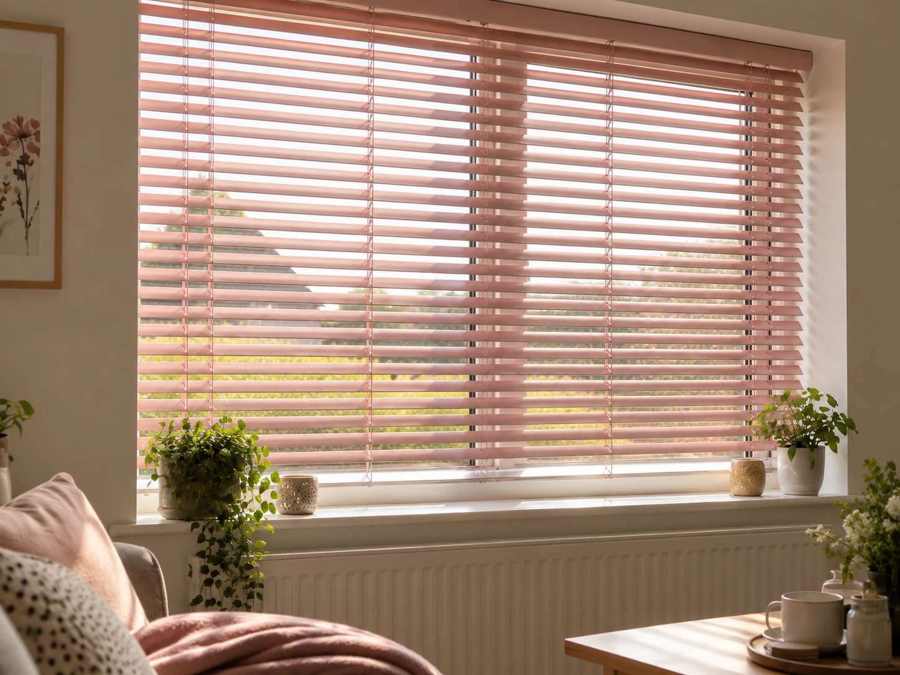
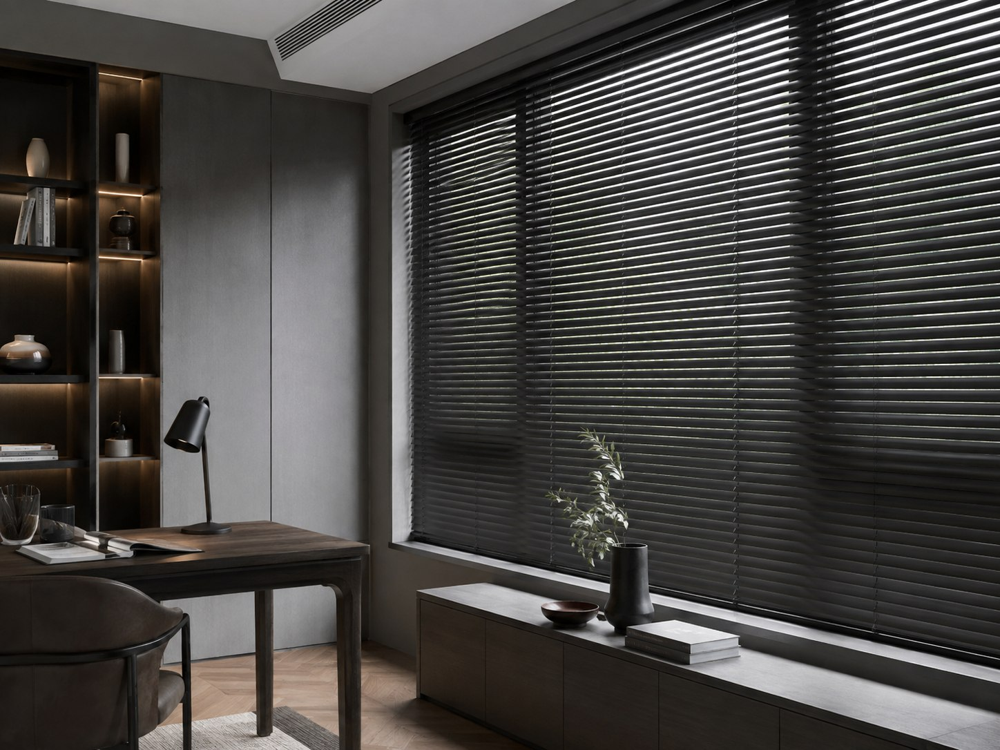
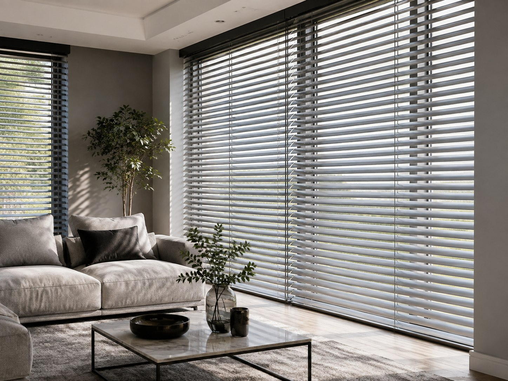
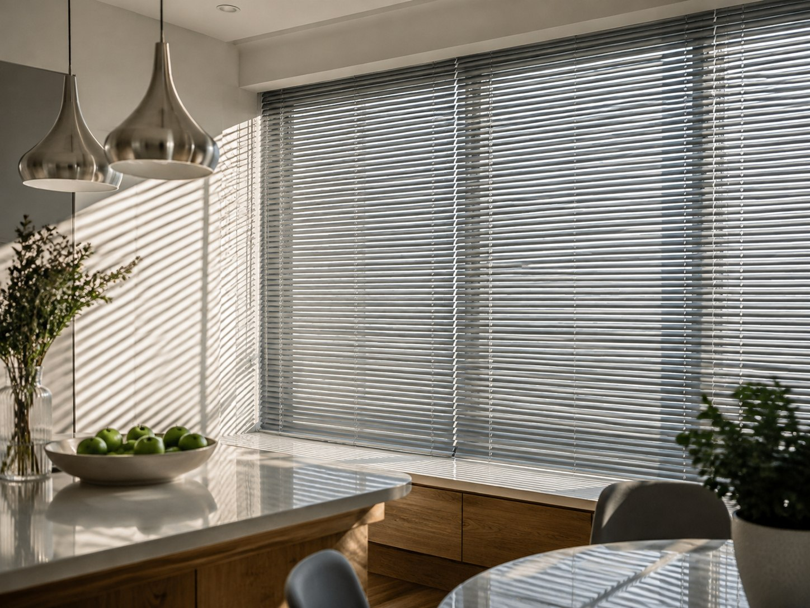

Metal Venetians,
made to measure.
Bold metallics, soft wood-effect finishes and fade-resistant colour that lasts — the most versatile way to dress a window. Measured and fitted by hand, free of charge, across Braintree and surrounding areas.
- Free measuring & fitting
- Fade-resistant stove-enamelled finish
- Child-safety compliant

Versatile by design.
A modern, versatile choice for almost any window, metal Venetians give you exact control over how much light gets in — and the ability to close things off entirely when you want proper privacy. Perfect if your windows look straight out onto the street.
Easy to wipe clean and unfazed by kitchens, bathrooms or busy family life, it's little wonder metal Venetians are one of our most popular styles. Choose from bold metallics, soft wood-effect finishes, or classic plain colours — whatever the room calls for.
Look closer and you'll find perforated styles that filter the light rather than blocking it outright, and a stove-enamelled finish on our aluminium slats that resists UV fading far better than a standard coating — so the colour you choose today still looks right in years to come.
Prefer the warmth of wood but want the practicality of metal? Our wood-effect aluminium blinds give you that soft, natural look in a selection of timber shades, without sacrificing an ounce of durability. And whatever the room — a plain metallic finish for a home study, or something bolder and more playful for a child's bedroom — there's a finish in here with your name on it.
See them in your own light.
From a moody matte black study to a bright, sunlit kitchen — a few of the settings metal Venetians work beautifully in.



Built to look sharp, for longer.
The finishing details that set Metal Venetians apart from a standard blind — precision, durability, and a colour that doesn't quit.
Precise light & privacy control
Tilt to filter light, close fully for privacy — ideal for windows facing the street.
Easy-clean & versatile
Wipes clean in seconds, at home in kitchens, bathrooms and every room in between.
Fade-resistant finish
A stove-enamelled coating that resists UV fading, so colours stay true for years.
Wood-effect available
The warm look of timber with all the practicality of aluminium.
A colour for every room
From understated metallics to bold statement shades — and everything between.
The details.
Everything gets confirmed against your own windows at the free measuring visit — this is a starting point for what's on offer.
- Slat Width
- 16mm or 25mm
- Finishes
- Metallics, wood-effect & plain colours, including perforated light-filtering styles
- Coating
- Stove-enamelled alloy for UV & fade resistance
- Control
- Cord & wand tilt, or cordless on request
- Child Safety
- Fitted with a child safety device, free of charge
- Best Suited To
- Street-facing windows, kitchens, bathrooms, studies & bedrooms
- Measuring & Fitting
- Free of charge
Metal Venetians, answered.
The questions homeowners usually ask before choosing Metal Venetians. Can't see yours? Get in touch and we'll answer it directly.
Our Metal Venetian range brings together a wide choice of premium aluminium finishes — including plain colours, wood-effect, perforated and fade-resistant stove-enamelled options — so if you'd like something beyond a plain colour, this is the place to start.
Yes, they're one of the best options for street-facing windows. Tilt the slats to let light in while staying screened from passers-by, or close them fully for complete privacy whenever you need it.
Yes. Our wood-effect aluminium blinds give you the soft, natural look of timber in a selection of wood shades, with all the practicality, durability and easy-clean benefits of the aluminium range. Prefer the real thing entirely? Take a look at our Wooden Venetians too.
Not in any noticeable way. Our aluminium slats use a stove-enamelled coating that reduces sensitivity to UV light, so the colour you choose stays looking true for years rather than washing out in direct sun.
A perforated Venetian has tiny holes through each slat that softly filter daylight even when the blind is closed, rather than blocking it out completely — a nice middle ground between full light and full privacy.
Yes. Every Metal Venetian blind we fit comes with a child safety device fitted free of charge as standard.
Prefer the warmth of real timber? We also fit genuine Wooden Venetians.
View Wooden VenetiansLet's get your windows measured.
Free measuring & fitting, and you'll choose your finish in your own home — no showroom.